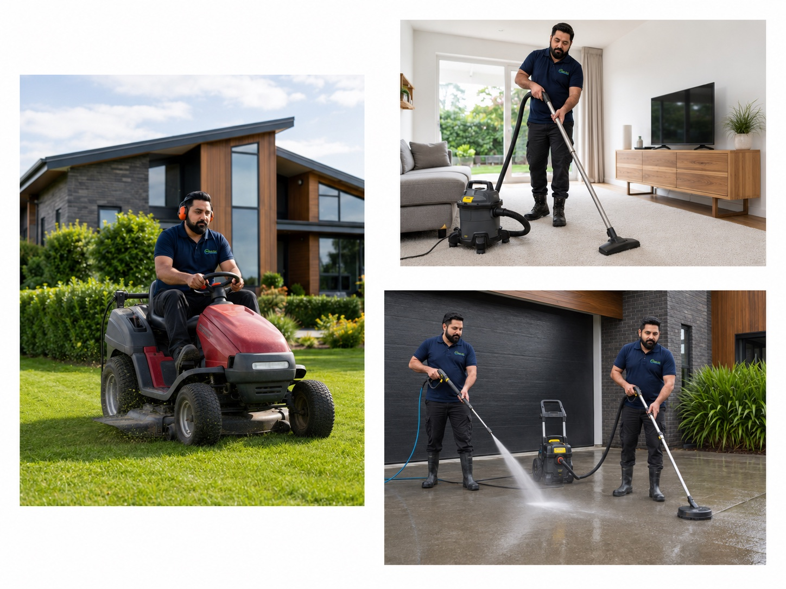
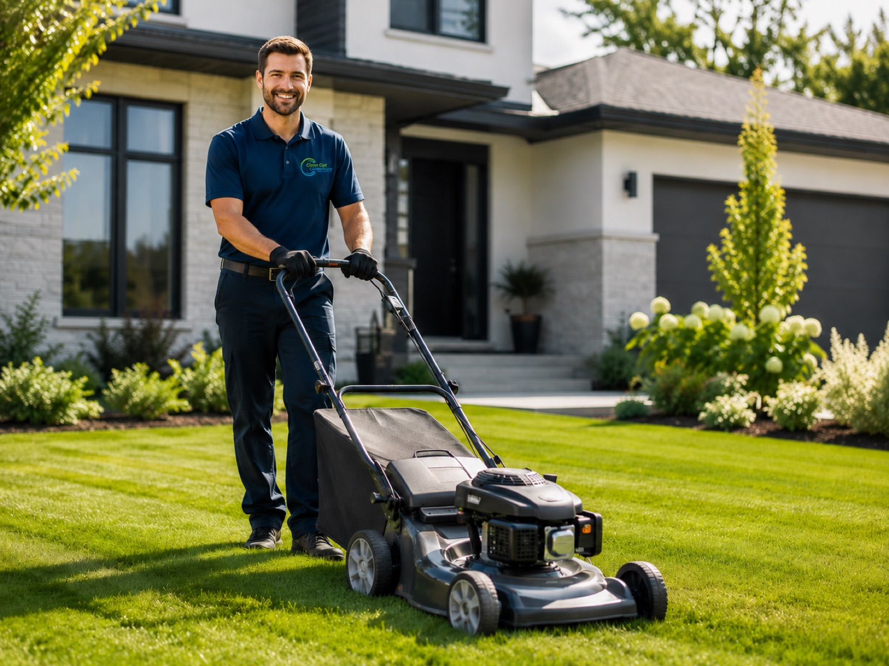
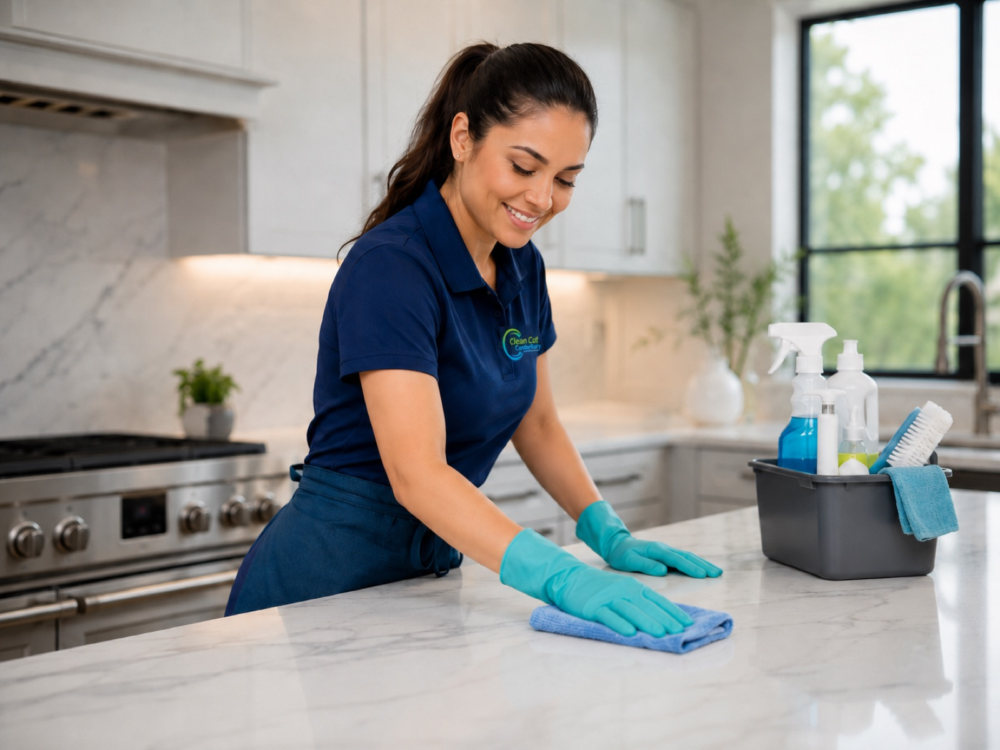
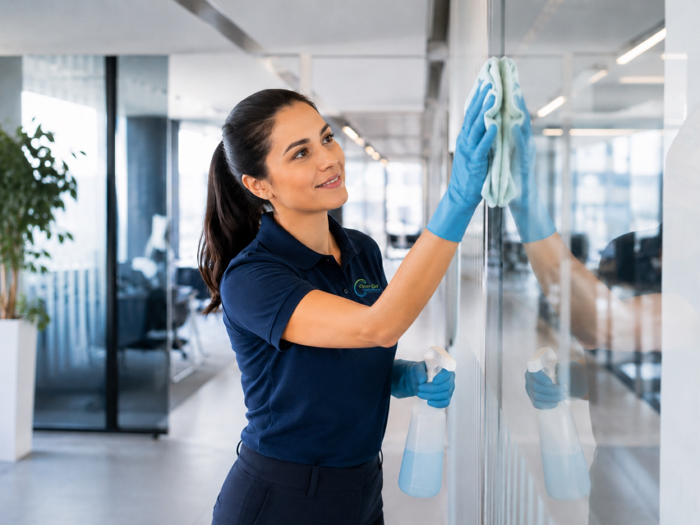
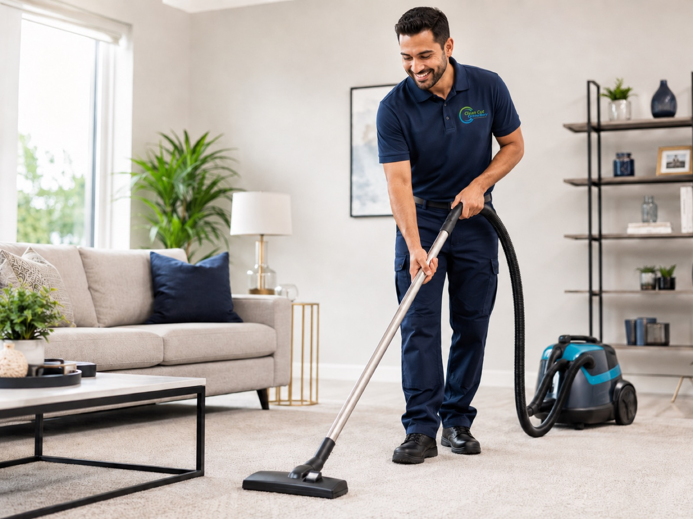
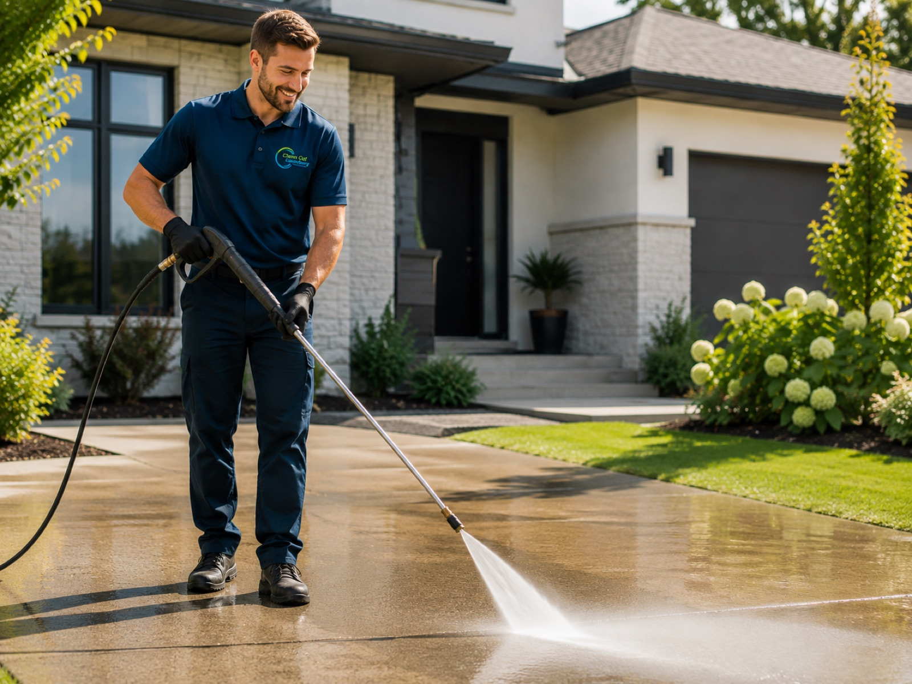
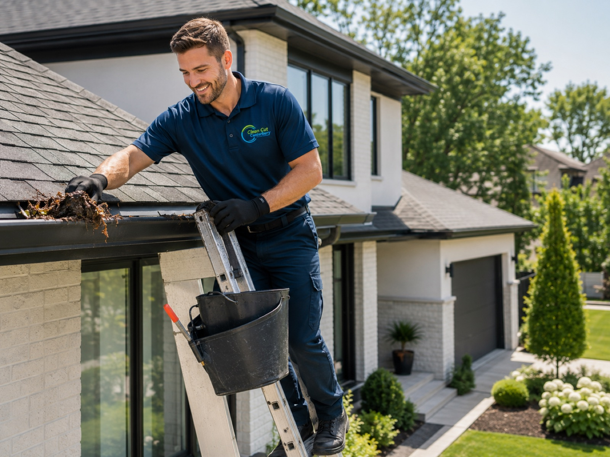

Professional lawn & garden care and complete cleaning for homes and businesses across Canterbury — using plant-based products that are safe for your family, pets and the planet.
Free Quote
We look after lawns and gardens, and we clean homes and businesses — so you only need one number for the lot. Regular maintenance, one-off jobs and commercial contracts, all across Canterbury.
Every job uses eco-friendly, plant-based products. Just as effective on grime, with none of the harsh chemical residue around your family, pets or garden.
Our approachMowing, hedges and garden care outside; kitchens, carpets, windows and full cleans inside. One team covering the whole property.
All servicesLocally owned and fully insured. We turn up when we say we will, treat your place with care and finish to a standard we're happy to put our name on.
Talk to usFrom a fortnightly mow to a full end-of-tenancy clean — pick what you need, or ask us to handle the lot.

Mowing, edging, hedge trimming, weeding and full garden maintenance to keep your section immaculate all year round.
Explore Lawn & Garden Care
Regular, one-off and spring cleans for your home — kitchens, bathrooms, floors and more, done with real care.
Explore House Cleaning
Reliable office, retail, hospitality and medical cleaning on a schedule that suits your business.
Explore Commercial CleaningStreak-free interior and exterior windows, frames, sills and tracks — letting more light into your space.
Explore Window Cleaning
Deep steam & stain extraction that lifts dirt, allergens and odours — leaving carpets fresh and revived.
Explore Carpet Cleaning
Driveways, paths, patios, decks, fences and house washes — moss, mould and grime blasted away.
Explore Water Blasting
The final touch after construction or renovation — dust, debris and builders mess cleared, move-in ready.
Explore Post-Build CleaningAt Clean Cut Canterbury we use plant-based, eco-friendly cleaning products on every job. They cut through dirt and grime just as well as harsh chemicals — without the nasty side effects.
That means a home and garden that is safe for your children, pets and vege patch, with no lingering fumes once we've packed up.
From first call to a job well done — we keep things simple and stress-free.
Call, message or fill in the quick form with what you need and where you're based.
We assess the job and send a clear, no-obligation price — usually within a day or two.
Our team arrives on time, fully equipped, with plant-based products and real care.
Sit back and enjoy a spotless, well-kept property — book again anytime.
We cover Christchurch and out through Waimakariri, Selwyn and Hurunui. If your town isn't listed, ask — we probably get there anyway.
Known as the Garden City, Christchurch keeps us busy all year — from villa windows in Merivale to post-build cleans on new subdivisions out west. We cover the whole city, suburbs included.
Explore ChristchurchWaimakaririRangiora sections tend to be generous, which is exactly what our ride-on is for. We handle big lawns, long hedges and the shelter belts that come with them.
Explore RangioraWaimakaririKaiapoi is a short run from our base, so we're in and out often. Handy if you want a quick tidy-up before family visit or a rental turned around between tenants.
Explore KaiapoiWaimakaririWoodend and Pegasus sit close to the coast, and salt air is hard on windows and exterior cladding. We keep on top of both.
Explore WoodendHurunuiAmberley and the surrounding Hurunui blocks often mean acreage. Bigger sections, longer grass, and plenty of hedge — the sort of work we're set up for.
Explore AmberleySelwynRolleston is one of the fastest-growing towns in the country, which means a lot of new builds — and a lot of builders' mess to clear before handover.
Explore RollestonTell us what you need and we'll send a free, no-obligation quote — usually within a day or two.